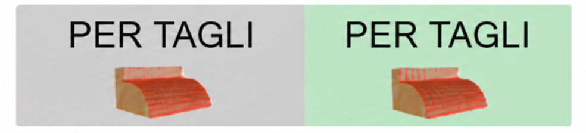
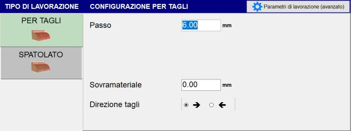
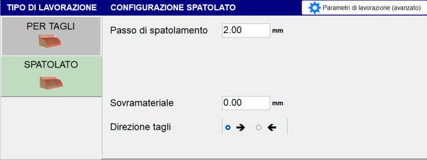

Machining can be performed in two modes:
Cutting
Sweeping
Cutting
In Cutting mode, parallel cuts following the selected profile are performed. The following parameters define their step, extension and direction.


Parameters
Step | Indicates the distance between the position of one cut and the adjacent cut. If it is greater than the blade thickness, material remains between the passes. |
Stock allowance | Thickness of material to be left above the required final section. |
Start/end extension | Extends the start or end of the cut by the set value. |
Auto Increase | When enabled, automatically increases the extension value according to the calculation performed by the system. |
Cut direction | Defines the direction in which the cuts are performed, from right to left or from left to right, according to the selected configuration. |
Sweeping
In Sweeping mode, the movement is transverse to the profile direction and is used to finish the workpiece surface.


Parameters
Sweep step | Indicates the distance between one transverse movement and the next along the profile direction. |
Stock allowance | Thickness of material to be left above the required final section. |